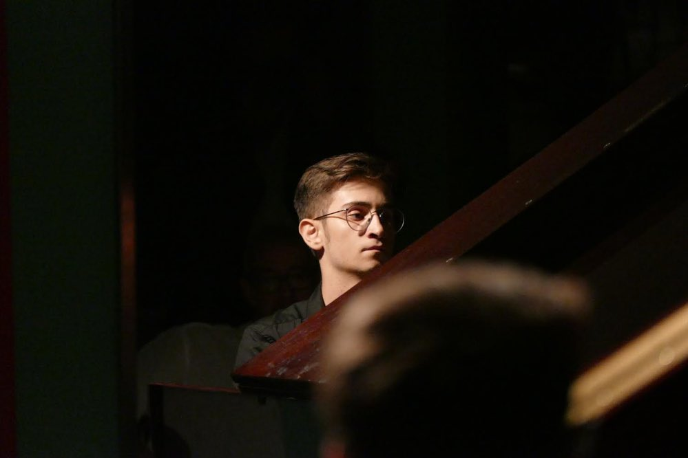

Game Jam · Tactical RPG
itch.io ↗
Astra in Ruina
Turn-based sci-fi survival game — fight an endless horde of demonic entities. Full OST composed, produced and mastered solo.
Orchestral Composer · Game Audio
Composition. Orchestration. Production. Mix. Master.
Everything your game needs — under one roof.
Reply within 48h · Full pipeline in-house · FMOD ready
// Work 01
Eight tracks, eight different worlds. The player follows you while you browse.
Imagining this sound in your game?
Get a custom quote// Implementation 02
I don't just hand over tracks — I build them into adaptive systems in FMOD, so the score follows the player in real time. Here's how it works.
// Horizontal re-sequencing
// Cinematic Scoring 03
A full rescore of Unity's Book of the Dead (2018) — atonal and unsettling, written and produced to hit every cut, breath and shadow on screen. Proof that the right score can carry a cinematic on its own.
// Projects 04
Turn-based sci-fi survival game — fight an endless horde of demonic entities. Full OST composed, produced and mastered solo.
Pirate adventure game — how long can you make your legend last? Built for the 2026 Godot Wild Game Jam with Nemo, Afonso Silva and BluNotes. Full soundtrack composed, produced and mastered.
↳ click a track name to hear it instantly
// Testimonials 05
The music was incredible — serious talent. Don't let anyone tell you otherwise.
By far the best jam I've ever shipped on time. Everyone brought their A-game — and the soundtrack exceeded every expectation.
Thank you for the extraordinary music. It made all the difference.
// Who 06
I write, orchestrate, record, mix and master — solo. When the project needs real players, I bring them in.

// Pipeline
Themes, motifs, leitmotifs — built around your world.
Full written parts. Ready for live players or samples.
Virtual + live sessions. Real instruments when it matters.
Stereo or stems. Optimised for engine or streaming.
// Training
// Sound 07
// Services 08
Themes, biomes, boss music, UI stings, credits. FMOD ready.
Real players, my network. Strings, brass, woodwinds, voices — individual session musicians recorded and produced.
Conductor score + printed parts. From sketch to symphony-ready notation.
Stereo or stems. Game engine, trailer, or streaming — your choice.
// Process 09
Tell me about your world with the 2-minute project form. I reply within 48 hours with a tailored proposal — not a template.
I compose, orchestrate and produce. You hear the direction early, and we shape it together until it fits your game like a glove.
Mixed and mastered — stereo, stems, or a full FMOD setup. Everything arrives ready to drop into your engine.
// FAQ 10
Whatever your pipeline needs: stereo masters, separated stems for your audio engine, or a complete FMOD project with adaptive triggers — plus written scores and parts if you're recording live.
Yes — that's my specialty. I build adaptive systems in FMOD where the score transitions on the beat between exploration, combat and everything in between. See the demo in the Implementation section above.
When the project calls for it, yes. I have a network of session musicians — strings, brass, woodwinds, voices — recorded and produced individually on top of the virtual orchestra.
Every project is quoted individually based on minutes of music, instrumentation and implementation needs. Fill in the project form and you'll get a real proposal within 48 hours — not a copy-paste rate card.
Games are home, but I also write for film, series and trailers — the Book of the Dead rescore above is scored to picture, hitting every cut and breath on screen.
Just tell me about your game: the vibe you're going for, reference tracks if you have them, and your timeline. A build or gameplay footage helps, but even a concept doc is enough to begin.
// Contact
Tell me what you're building.